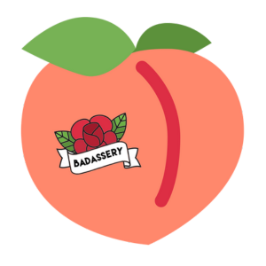
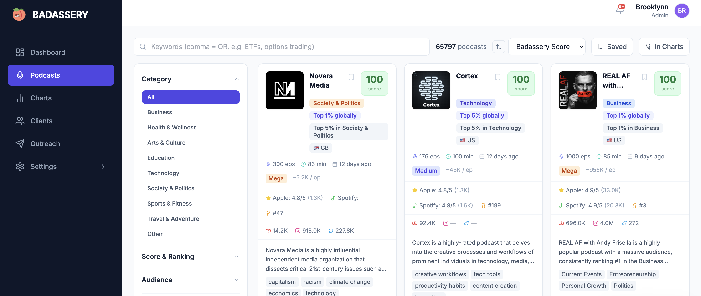
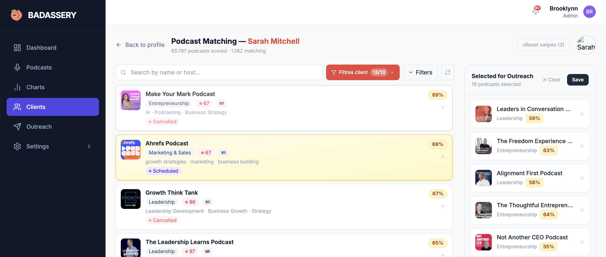
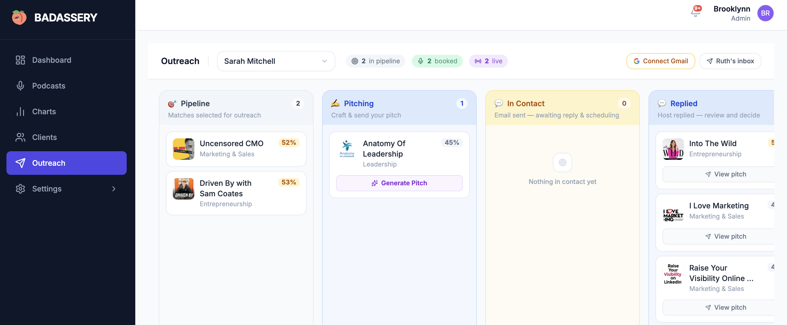

AI-powered podcast booking platform. Brooklynn finds, scores, and books the right podcasts for your clients — so PR agencies close more placements, faster.

Finding the right podcasts for a speaker client takes hours of manual research — cross-referencing audience data, checking if hosts accept guests, identifying contact emails. Most agencies rely on personal relationships and static lists that go stale immediately.
Brooklyn Intelligence is a full-stack SaaS built for podcast booking agencies. It replaces the spreadsheet with an AI-powered database of 10K+ scored shows, a Kanban outreach pipeline, Gmail integration, and a white-label client portal — all built solo, from zero to live beta.
Every feature was designed around the actual daily workflow of a podcast booking agent — from discovery and scoring, to outreach and client reporting.
195 data points par show. Filtres par catégorie, audience, score, pays. Chaque podcast scoré et classé en temps réel.

Gemini 2.0 Flash parcourt les 65 797 shows de la base et calcule un score de matching entre chaque podcast et le profil du client. Mis en cache 24h.
Chaque client a son propre profil IA. Brooklynn fait correspondre les 65K shows à ses critères — 1282 matches pour Sarah Mitchell, triés par pertinence.

Kanban par client. Pipeline → Pitch IA généré → In Contact → Replied → Booked. Intégration Gmail directe depuis l'app.

Serverless architecture built for a small team. Firebase handles auth, real-time database, and hosting. Cloud Functions manage Gmail SMTP and background tasks. Gemini 2.0 Flash powers the AI matching pipeline — fast inference, low cost.
The core value of the platform is the database quality. A multi-stage enrichment pipeline collects and refreshes data from RSS feeds, Apple Podcasts, Spotify Charts, YouTube, and social networks — then runs parallel AI scoring with Gemini to compute the Badassery Score for every show.
Brooklyn Intelligence is deployed, live, and in closed beta with 3–5 agency testers. Built solo — product, design, frontend, backend, data pipeline, AI integration — from zero to production in a single sprint.